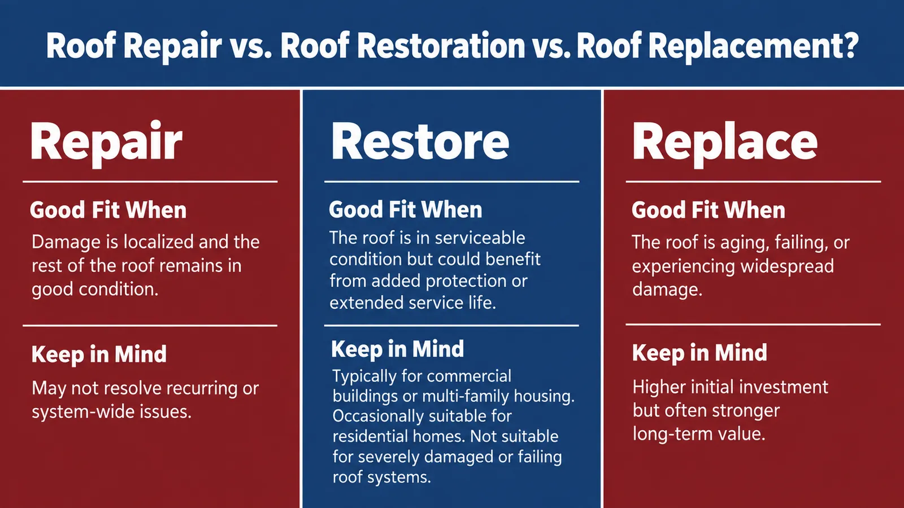

Roof Repair vs. Roof Replacement: Choosing the Right Solution for Your Roof
A roof leak. Missing shingles after a storm. Water stains on the ceiling. When something goes wrong with your roof, one of the first questions is often whether it can be repaired—or if it’s time for a full replacement.
While many roofing problems can be resolved with targeted repairs, some roofs have reached the point where replacement offers better long-term value. In other situations, roof restoration or coating may provide a third option by extending the life of an otherwise sound roof.
Roof repair vs. roof replacement isn’t always a simple decision. Here’s what to consider before moving forward.

5 Questions That Point You Toward the Right Roofing Solution
Every roof is different, but professionals typically begin by asking a few important questions before recommending a solution.
1. How old is the roof?
Age alone doesn’t determine whether a roof should be replaced, but it provides valuable context. Asphalt shingle roofs often last between 15 and 30 years, depending on installation quality, maintenance, and Utah’s climate. Snow, freeze-thaw cycles, intense UV exposure, wind, and summer heat can all shorten a roof’s lifespan over time.
2. Is the damage limited or widespread?
A handful of damaged shingles requires a very different approach than multiple leaks or damage affecting large sections of the roof.
3. Is this a one-time issue or a recurring problem?
An isolated repair may solve the problem. However, if you’re repeatedly addressing leaks or storm damage in different areas, the roof may be showing signs of broader deterioration.
4. Is the roof still structurally sound?
The roofing materials may show wear while the underlying structure remains in good condition. On the other hand, damage to decking, underlayment, or insulation can change the best course of action.
5. Are you trying to solve an urgent leak, extend roof life, or make a long-term investment?
Some property owners simply need to stop an active leak. Others want to maximize the life of their existing roof or make a long-term investment that minimizes future maintenance needs.
The answers to these questions typically point toward one of three solutions: repair, restoration, or replacement.
Signs a Roof Repair May Be All You Need
Roof repair often makes the most sense when the damage is limited, and the rest of the roof is still performing well.
Repair may be appropriate for situations such as:
- A few missing or damaged shingles
- One localized roof leak
- Minor flashing damage around a chimney, vent, or skylight
- Isolated areas of wear on an otherwise healthy roof
- Small areas damaged by wind or fallen branches
- A relatively young roof with plenty of useful life remaining
When the problem is contained and the roofing system is otherwise healthy, repairing the damaged area can often extend the life of your roof while avoiding the cost of a larger project.
Is Roof Restoration or Coating an Option?
Repair and replacement aren’t always the only choices.
Not every roof is a good candidate. For some roofs, restoration or coating may extend the roof’s service life and improve weather protection. This is especially true for commercial buildings, apartment complexes, condominiums, flat roofs, and other low-slope systems.
Some residential roofs may also be candidates for coating, particularly flat or low-slope roofs, depending on the roofing material, condition, and compatibility with the coating system.
A restoration system is more than simply patching a leak. The roof must first be evaluated to determine whether it is structurally sound enough for restoration to be effective. Factors such as age, drainage, existing damage, roof type, and moisture intrusion all influence whether coating is a practical solution.
Roof restoration is generally not appropriate when the roof has significant structural damage, saturated materials, widespread deterioration, or extensive failure.
When Roof Replacement Becomes the Better Long-Term Choice
There comes a point when repairing a roof no longer solves the underlying problem.
A roof replacement may become the better investment when:
- The roof is nearing the end of its expected service life.
- Damage extends across multiple areas.
- Leaks continue returning despite previous repairs.
- Shingles are curling, brittle, missing, or losing granules.
- Decking, underlayment, insulation, or roofing membranes have sustained damage.
- Storm damage affects a substantial portion of the roof.
- Repair costs continue adding up without improving overall performance.
While repairs typically cost less upfront, repeatedly fixing an aging roof can become more expensive over time than investing in a replacement that restores long-term protection.
Related read: How Much Does a New Roof Cost in Utah?
Additional Considerations for Commercial, Apartment, and Condo Roofs
For commercial buildings, apartments, condominiums, and other multi-family properties, the decision involves more than the condition of the roof itself.
Property owners and managers often need to consider:
- Tenant or business disruption
- Ongoing leak complaints
- Drainage performance and ponding water
- Rooftop HVAC equipment and other mechanical systems
- Warranty requirements
- Documentation for boards, owners, or stakeholders
- Budget planning and capital improvement schedules
- Phasing work to minimize disruption for occupied buildings
Evaluating these factors alongside the roof’s condition helps determine which solution provides the greatest value.
Get Answers Before You Make a Roofing Decision
Choosing between roof repair vs. roof replacement isn’t always easy, and roof restoration may also be worth considering in some situations. The only way to know for sure which option is right for your roof is with a professional evaluation.
Since 1954, American Roofing Company has been helping Utah property owners make informed roofing decisions. Instead of recommending the biggest project, we evaluate each roof and recommend the solution that makes the most sense for your property and your budget.
Schedule your free roof evaluation today and find out whether repair, restoration, or replacement is the right solution for your roof.